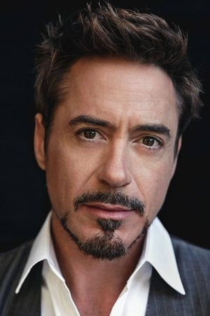

Reparto
-

- Tony Stark (Robert Downey Jr):
Un excéntrico y brillante multimillonario, heredero de una empresa armamentista, cuya experiencia traumática lo lleva a convertirse en Iron Man.
Sobre el actor:Downey Jr. es ampliamente reconocido por su carisma, inteligencia actoral y capacidad de mezclar humor con emoción. Su papel como Tony Stark lo convirtió en un ícono global y fue fundamental para el éxito del MCU.
- Virginia "Pepper" Potts (Gwyneth Paltrow):
Asistente personal (y eventual interés amoroso) de Tony Stark. Es una figura clave en su vida, con un papel que combina inteligencia, empatía y firmeza.
Sobre la actriz:Ganadora del Óscar (Shakespeare in Love), Paltrow aporta elegancia y fuerza a su personaje, siendo una presencia constante y confiable a lo largo de la saga.
- Obadiah Stane (Jeff Bridges):
Socio de confianza de Tony y mano derecha en Industrias Stark. Su ambición lo convierte en el villano de la historia, buscando controlar la empresa y replicar la tecnología de Iron Man para fines oscuros.
sobre el actor:Legendario actor con una carrera extensa, ganador del Óscar (Crazy Heart), Bridges aporta una presencia imponente y carismática, dándole profundidad a su antagonista.
- James “Rhodey” Rhodes (Terrence Howard):
Oficial de la Fuerza Aérea y mejor amigo de Tony Stark. Aunque no se convierte en War Machine en esta película, se sugiere su papel futuro como aliado.
Sobre el actor:Howard fue nominado al Óscar por Hustle & Flow y es conocido por su intensidad y carisma. Fue reemplazado por Don Cheadle en las siguientes películas del MCU.
- Yinsen (Shaun Toub) :
Médico y prisionero que ayuda a Tony a sobrevivir y construir su primera armadura en cautiverio. Es una figura clave en la transformación moral de Stark.
Sobre el actor:Toub es un actor iraní-estadounidense con experiencia en cine y televisión. Su papel, aunque breve, es profundamente emocional y memorable.
- J.A.R.V.I.S. (Paul Bettany) :
Inteligencia artificial que asiste a Tony en la creación y operación de la armadura.
Sobre el actor:Bettany, con su voz distintiva, interpretó a J.A.R.V.I.S. en varias películas antes de asumir un rol físico como Vision en el MCU. Es un actor británico con una sólida carrera en cine.